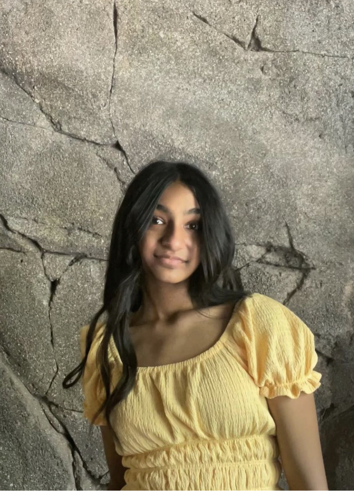
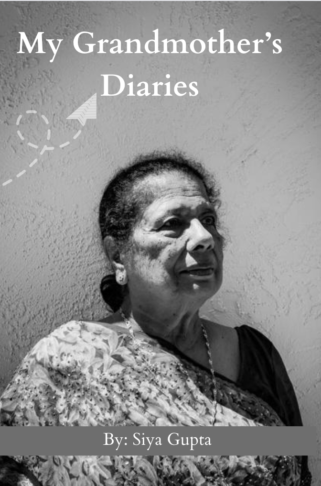

About Us

Founder
My Untold Stories is an online community where people from all walks of life can share their previously unspoken experiences. We understand the difficulty of opening up, especially if you've been silenced by family or cultural pressures. Our goal is to provide a safe space where you can freely express yourself and connect with others who can relate to your journey.
My Grandmother's Diaries
I have been working on my own book that highlights the difficulties my grandmother had faced gorwing up. Stories all hold an individual's unique perspective and sharing them in a community can help highlight individual's struggles and share their successes"
